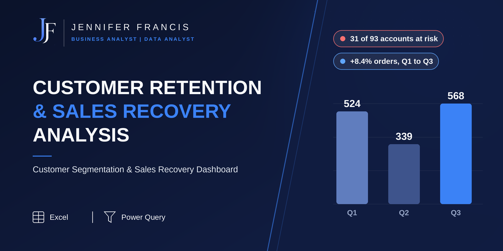
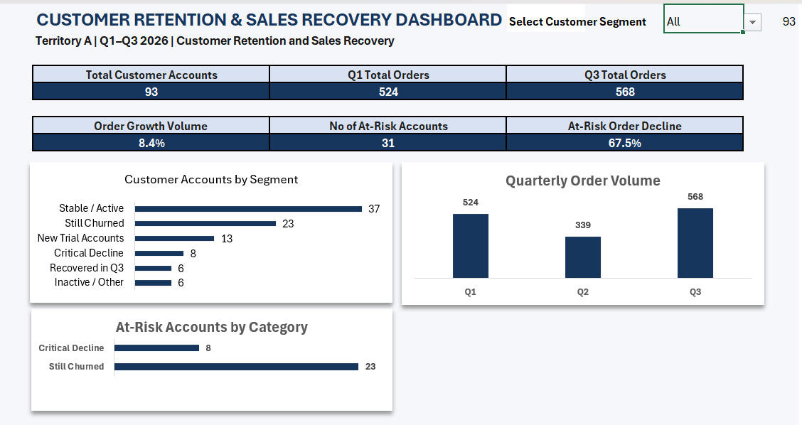

Total orders were up 8.4%, and 31 accounts had quietly stopped or sharply cut back ordering. This analysis finds them, sizes the damage, and shows where recovery effort should go first.

Without a consolidated view of how customers were ordering, it was hard to tell which relationships needed attention, so sales follow-up was based on whoever came to mind rather than on evidence. The analysis was built around three questions:
I consolidated three quarters of order data into one customer-level view, classified every account by how it was behaving, and put the result into an interactive dashboard a sales team could filter by segment.
An interactive Excel dashboard with a customer-segment selector, showing account segmentation, quarterly order volume, and the accounts that need recovery attention.

Orders rose from 524 in Q1 to 568 in Q3, which on its own looks like a healthy quarter. Splitting the 93 accounts by behaviour told a different story:
The 31 accounts classed as Still Churned or Critical Decline saw a combined order-volume drop of 67.5%. The headline growth was masking a retention problem, which is why overall performance has to be read alongside customer-level activity.
The analysis turned a vague worry about lost customers into a named, sized, and ranked list, and supported a targeted Q4 recovery plan:
The order data shows what changed, not why. Explaining the causes would need direct customer engagement, so the plan builds that step in rather than guessing.
Scope and confidentiality. StrideWear Footwear is a simulated company identity used to present this project. The analysis is based on a real commercial analysis carried out in a professional sales environment, with customer identifiers anonymised. Figures reflect the defined customer portfolio analysed, not verified company-wide totals, and the Q4 recovery plan describes proposed actions; actual recovery results have not been established.
Want the full breakdown: Excel workbook, written case study, and dashboard?
View full repo on GitHub